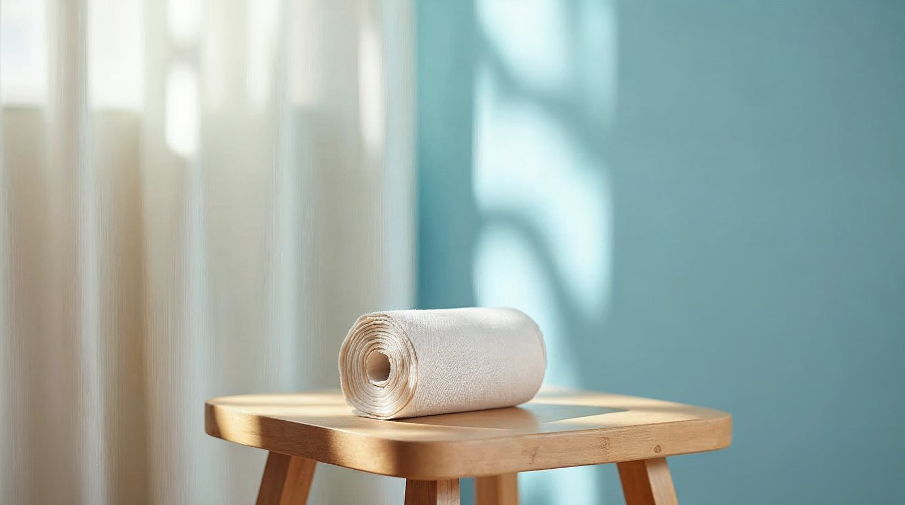
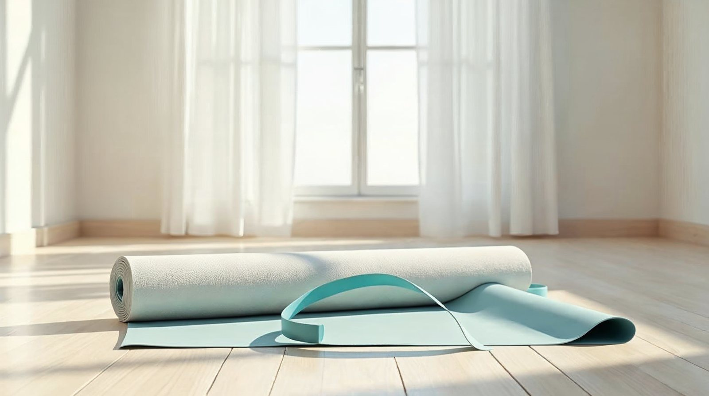
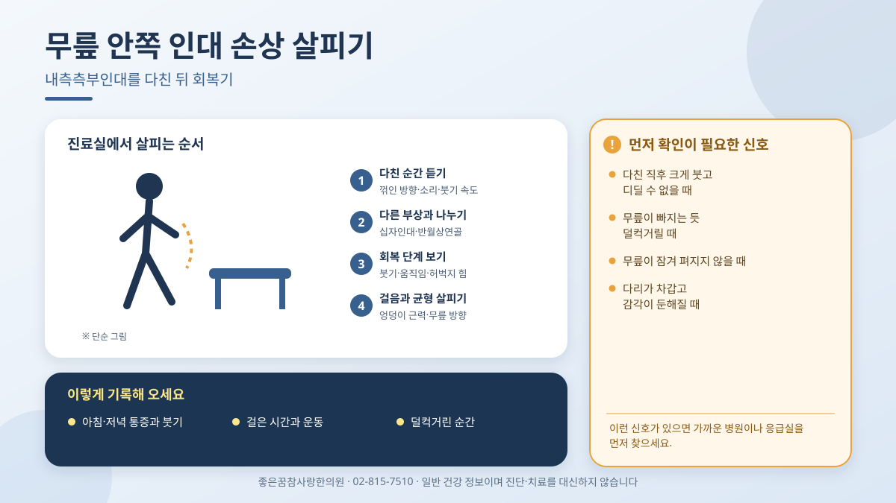

이종호 한의사 감수좋은꿈참사랑한의원 대표원장 (한의사 면허번호 19769)발행 2026-11-26 · 수정 2026-11-26
이 글의 차례
주말 축구 경기 중이었습니다. 공을 다투다 상대 선수와 부딪히는 순간, 무릎이 안쪽으로 꺾이며 무릎 안쪽에서 뭔가 찢어지는 듯한 통증이 지나갑니다. 절뚝이며 경기장을 나와 보니 무릎 안쪽이 부어오르고, 다리를 쭉 펴기도 굽히기도 불편합니다.
스키를 타다 다리가 벌어지며 넘어졌을 때, 빙판에서 미끄러지며 무릎이 안쪽으로 꺾였을 때, 계단에서 발을 헛디뎠을 때도 비슷한 일이 생깁니다. 이렇게 무릎 바깥쪽에서 힘이 들어와 무릎이 안쪽으로 꺾이면, 무릎 안쪽을 잡아 주는 인대가 늘어나거나 찢어질 수 있습니다.
진료실에서 무릎 안쪽 인대를 다친 분들은 대개 두 가지를 궁금해하십니다. 수술을 해야 하는지, 그리고 언제쯤 다시 운동을 할 수 있는지입니다. 그 답은 인대가 얼마나 다쳤는지, 다른 구조가 함께 다쳤는지에 따라 달라지기 때문에, 먼저 정확한 확인이 필요합니다.
이 글에서는 내측측부인대가 어떤 인대인지, 다친 정도에 따라 무엇이 달라지는지, 다른 무릎 부상과 어떻게 다른지, 그리고 회복 기간에 일상과 한의원에서 무엇을 함께 살필 수 있는지를 정리해 보겠습니다.
내측측부인대는 어떤 일을 하나요
무릎은 허벅지뼈와 정강이뼈가 만나는 관절이고, 여러 개의 인대가 이 두 뼈를 묶어 흔들리지 않게 잡아 줍니다. 그 가운데 내측측부인대는 무릎 안쪽 옆면을 따라 허벅지뼈와 정강이뼈를 이어 주는 넓은 띠 모양의 인대입니다.
이 인대는 무릎이 안쪽으로 꺾이지 않도록 막아 주는 역할을 합니다. 걷거나 뛰다 방향을 바꿀 때, 옆에서 부딪힐 때 무릎이 X자로 무너지지 않게 버텨 주는 것이지요. 그래서 바깥에서 무릎을 미는 힘을 받으면 가장 먼저 늘어나는 인대이기도 합니다.
다행히 내측측부인대는 주변에 혈액 공급이 비교적 좋은 편이어서, 무릎 안의 다른 인대에 비해 수술 없이 회복되는 경우가 많은 인대로 알려져 있습니다. 다만 다친 정도와 함께 다친 구조에 따라 회복의 길이 달라집니다.

다친 정도에 따라 무엇이 달라지나요
가볍게 다친 경우는 인대가 늘어나기만 하고 찢어지지 않은 상태입니다. 무릎 안쪽을 누르면 아프고 조금 붓지만, 무릎이 흔들리는 느낌은 거의 없습니다. 이런 경우는 대개 몇 주 안에 일상으로 돌아오는 흐름을 보입니다.
중간 정도로 다친 경우는 인대의 일부가 찢어진 상태입니다. 통증과 붓기가 더 뚜렷하고, 무릎을 안쪽으로 밀어 보면 반대쪽보다 조금 더 벌어지는 느낌이 있습니다. 보조기로 무릎을 보호하며 회복을 기다리는 경우가 많습니다.
심하게 다친 경우는 인대가 완전히 끊어진 상태입니다. 오히려 통증이 생각보다 덜할 때도 있지만, 무릎이 안쪽으로 크게 흔들리고 불안합니다. 이 경우에는 다른 인대나 반월상연골이 함께 다쳤을 가능성도 커서, 정형외과에서 자세한 검사와 치료 방침을 정하게 됩니다.
왜 다친 뒤에도 무릎이 오래 불편할까요
인대는 근육보다 혈액 공급이 적어서 회복에 시간이 걸립니다. 겉으로 붓기가 빠지고 통증이 줄어도, 인대가 다시 단단해지기까지는 몇 주에서 몇 달이 필요합니다. 이 시기에 무리하면 같은 자리를 다시 다치기 쉽습니다.
또 무릎을 다치면 우리 몸은 반사적으로 허벅지 앞 근육의 힘을 줄입니다. 아픈 무릎을 보호하려는 반응이지만, 그 상태가 오래가면 허벅지 근육이 눈에 띄게 가늘어지고, 무릎을 잡아 주는 힘이 약해져 불안정한 느낌이 남습니다.
아픈 다리를 아끼느라 걸음이 기울면 반대쪽 다리와 허리, 엉덩이에도 부담이 쌓입니다. 그래서 무릎 안쪽 인대의 회복만이 아니라 허벅지 힘과 걸음 전체를 함께 되찾아야 무릎이 다시 믿음직스러워집니다. 회복의 속도는 사람마다 다르니 다른 사람과 비교하지 않으셔도 됩니다.
다른 무릎 부상과는 어떻게 다른가요
전방십자인대는 무릎 안 한가운데에서 정강이뼈가 앞으로 밀리지 않게 잡아 주는 인대입니다. 이 인대를 다치면 다칠 때 뚝 소리가 나고, 몇 시간 안에 무릎 전체가 크게 붓는 경우가 많으며, 무릎이 빠지는 듯 덜컥거리는 느낌이 납니다. 내측측부인대 손상은 아픈 자리가 무릎 안쪽 옆면에 비교적 뚜렷하게 모이는 편입니다.
반월상연골은 무릎뼈 사이에서 쿠션 역할을 하는 연골입니다. 이 연골을 다치면 무릎 안에서 무언가 걸리는 느낌, 무릎이 잠겨서 펴지지 않는 느낌, 쪼그려 앉을 때 무릎 깊은 곳이 아픈 느낌이 생깁니다. 내측측부인대와 안쪽 반월상연골이 함께 다치는 경우도 있습니다.
무릎 안쪽 아래가 아픈 거위발건염은 다친 기억 없이 계단을 오르내리거나 오래 걸은 뒤 서서히 아파지는 경우가 많습니다. 아픈 자리도 인대보다 조금 아래쪽, 정강이뼈 안쪽 윗부분입니다. 다친 순간이 분명한지가 구분의 큰 실마리가 됩니다.
겨울 운동과 빙판길에서 더 조심할 점
겨울에는 스키와 스노보드, 빙판길 미끄러짐으로 무릎 안쪽 인대를 다치는 분이 늘어납니다. 스키에서 두 다리가 벌어지며 넘어지거나 스키 앞이 안쪽으로 모이며 넘어질 때 무릎이 안쪽으로 꺾이기 쉽습니다.
추운 날에는 근육이 움츠러들어 반응이 느려지고, 무릎을 잡아 주는 힘이 늦게 들어갑니다. 겨울 운동 전에는 평소보다 준비 운동을 길게 하고, 빙판길에서는 보폭을 줄여 발 전체로 디디며 걷는 것이 무릎을 지키는 데 도움이 됩니다. 주머니에 손을 넣고 걷지 않는 것도 균형을 잡는 데 필요합니다.

회복 단계마다 무엇이 달라지나요
다친 직후 며칠은 붓기와 통증을 다스리는 시기입니다. 무리하게 걷지 않고, 냉찜질과 다리 올리기로 붓기를 줄이며, 정형외과의 안내에 따라 보조기나 목발을 쓰기도 합니다. 이때 무릎을 너무 오래 굽힌 채로 두지 않는 것이 좋습니다.
붓기가 가라앉으면 무릎을 펴고 굽히는 범위를 되찾고, 허벅지 앞 근육에 힘을 주는 연습을 시작합니다. 누워서 무릎을 펴고 허벅지에 힘을 주었다 빼기, 다리를 곧게 펴서 들어 올리기처럼 무릎에 비틀림이 없는 운동부터 합니다.
걸음이 자연스러워지면 계단, 가벼운 스쿼트, 균형 연습을 더하고, 마지막으로 달리기와 방향 전환, 점프처럼 운동에 필요한 동작으로 넓혀 갑니다. 운동 복귀 시점은 무릎의 안정성과 근력을 확인한 정형외과 선생님과 상의해서 정하시는 것이 안전합니다.
자주 헷갈리는 것
첫째, 안 아프면 다 나은 것이라는 생각입니다. 통증이 줄어든 뒤에도 인대는 한동안 약한 상태로 남아 있습니다. 이때 갑자기 축구나 스키처럼 무릎이 안쪽으로 꺾이기 쉬운 운동으로 돌아가면 다시 다치기 쉽습니다.
둘째, 인대를 다쳤으니 오래 꼼짝 않고 쉬어야 한다는 생각입니다. 다친 직후에는 쉬는 것이 맞지만, 붓기가 가라앉은 뒤에도 너무 오래 움직이지 않으면 무릎이 굳고 근육이 빠집니다. 허락된 범위 안에서 움직이는 것이 회복을 돕습니다.
셋째, 무릎만 운동하면 된다는 생각입니다. 엉덩이 옆 근육이 약하면 걷거나 뛸 때 무릎이 안쪽으로 무너지기 쉽고, 그만큼 안쪽 인대에 부담이 갑니다. 엉덩이와 몸통의 힘을 함께 기르는 것이 다시 다치지 않는 데 도움이 됩니다.
먼저 이렇게 여쭙니다
처음 오시면 저는 대략 이런 순서로 여쭙니다. 미리 생각해 오시면 이야기가 훨씬 수월해집니다.
- 언제, 어떤 동작에서 다치셨나요? 무릎이 어느 쪽으로 꺾였나요?
- 다칠 때 뚝 소리가 났나요? 바로 걸을 수 있었나요?
- 무릎이 얼마나 빨리, 얼마나 크게 부었나요?
- 무릎이 빠지는 듯 덜컥거리거나 잠겨서 펴지지 않은 적이 있나요?
- 정형외과에서 엑스레이나 MRI를 찍고 들은 설명은 무엇인가요?
- 보조기, 목발을 쓰고 계신가요? 피하라고 들은 동작이 있나요?
- 하시는 운동과 다시 돌아가고 싶은 활동은 무엇인가요?
정확히 답하지 못하셔도 괜찮습니다. 다친 순간을 떠올려 보시고, 다친 직후와 지금 무릎의 느낌이 어떻게 달라졌는지만 말씀해 주셔도 많은 것을 알 수 있습니다.
예전에 같은 무릎을 다친 적이 있는지도 중요합니다. 같은 자리를 여러 번 다쳤다면 인대가 느슨해져 있거나 근육의 균형이 무너져 있을 수 있어서, 이번 회복에서는 다시 다치지 않도록 하는 연습에 조금 더 시간을 들입니다.
일상에서 먼저 해 볼 수 있는 것
다친 정도에 따라 회복 속도는 다르지만, 일상에서 무릎 안쪽에 부담을 덜 주는 습관은 누구에게나 도움이 됩니다.
- 다친 직후 며칠은 냉찜질과 다리 올리기로 붓기 다스리기
- 다리를 꼬거나 무릎을 안쪽으로 모으고 앉는 자세 피하기
- 누워서 무릎을 펴고 허벅지에 힘을 주었다 빼기를 하루 여러 번
- 계단은 난간을 잡고 한 칸씩, 아픈 다리는 내려갈 때 먼저
- 쪼그려 앉기, 양반다리처럼 무릎을 비트는 자세는 잠시 줄이기
- 엉덩이 옆 근육을 기르는 옆으로 누워 다리 들기 운동하기
걸을 때 발끝이 바깥으로 크게 벌어지면 무릎 안쪽이 더 벌어지는 힘을 받습니다. 발끝과 무릎이 같은 방향을 향하도록 걸음을 다듬어 보세요. 거울 앞에서 천천히 걸어 보면 무릎이 안쪽으로 무너지는지 확인할 수 있습니다.
운동으로 돌아갈 때는 갑자기 예전 강도로 돌아가지 말고, 직선으로 가볍게 뛰기부터 시작해 방향 전환, 점프, 상대와 부딪히는 동작 순서로 단계를 밟는 것이 좋습니다. 운동 전 준비 운동으로 엉덩이와 허벅지를 충분히 깨워 주세요.
한의원에서 함께 살필 수 있는 경우
- 붓기가 가라앉은 뒤에도 무릎 안쪽이 시큰하고 뻐근한 경우
- 아픈 다리를 아끼느라 반대쪽 무릎, 허리, 엉덩이가 뻐근한 경우
- 허벅지와 종아리가 단단하게 뭉쳐 걸음이 무거운 경우
- 추운 날이나 오래 걸은 날 무릎 안쪽이 욱신거리는 경우
- 운동 복귀를 앞두고 몸 전체의 균형을 함께 점검하고 싶은 경우
좋은꿈참사랑한의원에 오시면 먼저 아래 '먼저 확인이 필요한' 신호가 없는지부터 봅니다. 그다음 맥을 짚고, 무릎 안쪽의 아픈 자리와 붓기, 무릎을 펴고 굽히는 범위, 걸음걸이, 허벅지와 엉덩이 근육의 상태를 함께 살핍니다.
진찰한 내용을 바탕으로 무릎 주변과 허벅지의 긴장을 푸는 침, 온열 관리, 걸음과 자세 안내, 집에서 할 근력 운동 안내 가운데 지금 단계에 맞는 것을 정합니다. 무릎이 흔들리거나 걸리는 느낌이 있다면 정형외과 검사를 먼저 받아 보시도록 안내합니다.
한약 상담을 함께 할 때는 드시는 약을 모두 확인하고 신중하게 정합니다. 정형외과에서 받은 보조기나 처방은 그대로 이어 가시고, 한의원 진료는 그 곁에서 나란히 간다고 생각해 주시면 됩니다.
이렇게 기록해 오시면 상담이 쉬워집니다
인대 회복은 몇 주 단위로 변화가 보입니다. 1~2주만 간단히 적어 보세요.
- 무릎 안쪽 통증과 붓기 정도(아침, 저녁)
- 하루 걸은 시간과 계단, 운동을 한 일
- 무릎을 끝까지 펴고 굽힐 수 있는지
- 무릎이 흔들리거나 덜컥거린 순간이 있었는지
- 반대쪽 다리나 허리처럼 함께 불편해진 곳
무릎 둘레를 무릎뼈 바로 위에서 줄자로 재어 양쪽을 비교해 두시면, 붓기와 허벅지 근육의 변화를 숫자로 확인할 수 있습니다. 일주일에 한 번, 같은 시각에 재시면 충분합니다.
다시 무릎을 믿고 움직이기까지
무릎 안쪽 인대를 다친 뒤에는 통증보다 '또 다칠까' 하는 마음이 오래 남습니다. 그 마음은 자연스러운 것이고, 허벅지와 엉덩이 힘이 붙고 걸음이 고르게 되면서 조금씩 옅어집니다. 서두르지 않고 단계를 밟는 것이 가장 빠른 길이기도 합니다.
오늘은 누워서 허벅지에 힘을 주었다 빼기를 열 번, 옆으로 누워 다리 들기를 열 번 해 보세요. 다음에 오시면 그동안의 기록을 보며 다음 단계를 함께 정해 보겠습니다.
이런 증상은 먼저 확인이 필요합니다
- 다친 직후 무릎이 크게 붓고 디딜 수 없거나 무릎이 빠지는 듯 덜컥거리는 경우
- 무릎이 잠겨 펴지지 않거나 다리가 차갑고 감각이 둔해지는 경우
이런 신호가 있으면 한의원보다 가까운 병원이나 응급실을 먼저 찾으세요.
함께 읽으면 좋은 글
- 전방십자인대를 다친 뒤 재활 기간에는 무엇을 살피고 어떻게 지내나요?
- 무릎 반월상연골이 찢어졌다는 말을 들은 뒤에는 무엇을 살피고 어떻게 지내나요?
- 무릎 안쪽 아래가 아픈 거위발건염은 무릎 관절염과 어떻게 다르고 어떻게 살피나요?
- 무릎에 물이 찼을 때 초음파로는 무엇을 확인할 수 있나요?
- 무릎 앞쪽, 무릎뼈 주변이 시큰한 슬개대퇴통증은 어떻게 살피나요?

여쭙는 것
- 언제, 어떤 동작에서 다치셨나요? 무릎이 어느 쪽으로 꺾였나요?
- 다칠 때 뚝 소리가 났나요? 바로 걸을 수 있었나요?
- 무릎이 얼마나 빨리, 얼마나 크게 부었나요?
생활에서 해 볼 것
- 다친 직후 며칠은 냉찜질과 다리 올리기로 붓기 다스리기
- 다리를 꼬거나 무릎을 안쪽으로 모으고 앉는 자세 피하기
- 누워서 무릎을 펴고 허벅지에 힘을 주었다 빼기를 하루 여러 번
한의원에서 함께 살필 것
- 붓기가 가라앉은 뒤에도 무릎 안쪽이 시큰하고 뻐근한 경우
- 아픈 다리를 아끼느라 반대쪽 무릎, 허리, 엉덩이가 뻐근한 경우
- 허벅지와 종아리가 단단하게 뭉쳐 걸음이 무거운 경우
먼저 확인이 필요한 신호
- 다친 직후 무릎이 크게 붓고 디딜 수 없거나 무릎이 빠지는 듯 덜컥거리는 경우
- 무릎이 잠겨 펴지지 않거나 다리가 차갑고 감각이 둔해지는 경우
한눈에 보는 표
| 구분 | 핵심 |
|---|---|
| 여쭙는 것 | 언제, 어떤 동작에서 다치셨나요? 무릎이 어느 쪽으로 꺾였나요? 다칠 때 뚝 소리가 났나요? 바로 걸을 수 있었나요? |
| 생활에서 해 볼 것 | 다친 직후 며칠은 냉찜질과 다리 올리기로 붓기 다스리기 다리를 꼬거나 무릎을 안쪽으로 모으고 앉는 자세 피하기 |
| 한의원에서 함께 살필 것 | 붓기가 가라앉은 뒤에도 무릎 안쪽이 시큰하고 뻐근한 경우 아픈 다리를 아끼느라 반대쪽 무릎, 허리, 엉덩이가 뻐근한 경우 |
| 먼저 확인이 필요한 신호 | 다친 직후 무릎이 크게 붓고 디딜 수 없거나 무릎이 빠지는 듯 덜컥거리는 경우 무릎이 잠겨 펴지지 않거나 다리가 차갑고 감각이 둔해지는 경우 |
자주 묻는 질문
내측측부인대를 다치면 수술을 해야 하나요?
내측측부인대는 수술 없이 회복되는 경우가 많은 인대로 알려져 있습니다. 다만 다친 정도와 다른 인대, 연골이 함께 다쳤는지에 따라 달라지므로 정형외과의 판단을 먼저 따르시길 권합니다.
언제부터 다시 운동을 할 수 있나요?
다친 정도에 따라 다르며, 무릎의 안정성과 허벅지 근력을 확인한 정형외과 선생님과 상의해서 정하시는 것이 안전합니다. 복귀할 때는 가볍게 뛰기부터 단계를 밟아 주세요.
보조기는 언제까지 차야 하나요?
보조기를 차는 기간과 각도는 정형외과에서 다친 정도를 보고 정합니다. 혼자 판단해 일찍 벗기보다 다음 진료 때 함께 확인하시길 권합니다.
다친 무릎에 침 치료를 받아도 되나요?
다친 시기와 붓기, 정형외과의 소견을 먼저 확인한 뒤 무릎 주변과 허벅지, 함께 불편한 곳을 중심으로 진료 방향을 정합니다.
찜질은 냉찜질과 온찜질 중 무엇이 좋나요?
다친 직후 붓고 열감이 있을 때는 냉찜질이 일반적입니다. 붓기가 가라앉은 뒤 뻐근함이 남는 시기에는 따뜻하게 해 주는 것이 편한 분이 많습니다.
좋은꿈참사랑한의원은 재진 때 지난번 이야기부터 이어서 여쭙니다. 진료시간과 예약은 오시는 길에서 확인하세요.
어디서 상담받을 수 있나요?
좋은꿈참사랑한의원은 서울 동작구 만양로2길 2 신성빌딩 3층·5층(서울 동작구 상도동, 7호선 상도역 3번 출구 근처)에 있습니다. 한의사 3명(이종호 대표원장, 조영기 수석진료원장, 정원영 진료원장)이 진료합니다. 진료시간은 평일 09:30~20:00(점심 13:00~14:00), 토·일·공휴일 09:30~15:00이며, 방문 전 전화로 확인을 권합니다. 예약은 네이버 예약, 카카오톡 상담, 전화 02-815-7510로 받습니다.
이 글은 일반적인 건강 정보이며 개인의 진단이나 치료를 대신하지 않습니다. 증상이 있거나 복용 중인 약이 있다면 진료를 통해 확인하세요. 치료 효과는 개인마다 다를 수 있습니다.
작성 기준: 일반적으로 알려져 있는 건강 정보를 참고해 정리했습니다(대표원장 감수). 증상 기록은 1~2주 동안 하루 1회, 비슷한 시간에 적어 오시면 지난 상태와 비교하기 쉽습니다.